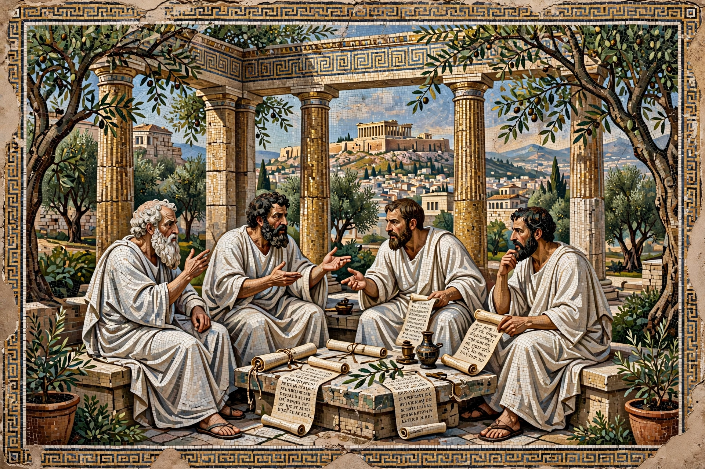

| Founded | c. 387 BC |
| Founder | Plato |
| Location | Akademeia, northwest of Athens |
| Notable members | Aristotle, Speusippus, Xenocrates, Arcesilaus, Carneades |
| Closed | Destroyed 86 BC; revived Neoplatonic school closed AD 529 |

The Platonic Academy (Greek: Ἀκαδημία) was a school founded by Plato around 387 BC in Athens, in a grove sacred to the hero Akademos outside the city walls — the origin of the modern word "academy". It is often regarded as the first institution of higher learning in the Western world, and it endured, with interruptions and transformations, for nearly nine centuries.
Plato taught in the gymnasium of the grove and owned an adjacent garden where his associates lived and studied mathematics, astronomy, music theory and philosophy. After Plato's death (347 BC) leadership passed to his nephew Speusippus, then Xenocrates, Polemon and Crates. Aristotle studied there for twenty years before founding his own school, the Lyceum. The mathematical emphasis was famous: later tradition placed over the entrance the motto "Let no one ignorant of geometry enter".
Under Arcesilaus (from c. 268 BC) the school turned to academic scepticism, arguing that certain knowledge is unattainable and adopting the method of arguing against any position. Carneades developed this into a sophisticated theory of probable belief. Cicero, who studied the tradition, transmitted much of it to Rome.
The Athenian school was destroyed when Sulla besieged Athens in 86 BC. Platonism continued in Alexandria and elsewhere; in AD 410s–529 a revived Neoplatonic school in Athens, associated with Plutarch of Athens, Syrianus and Proclus, taught a theological synthesis of Plato and Aristotle. In AD 529 the emperor Justinian's edicts against pagan teaching ended its public funding — traditionally taken as the closing of the Academy — and its last head, Damascius, briefly emigrated to Persia.
The Academy's name and ideal of a community of scholars shaped Renaissance academies and, ultimately, modern universities and learned societies; Marsilio Ficino's Florentine "Platonic Academy" under Medici patronage revived the name in the 15th century.